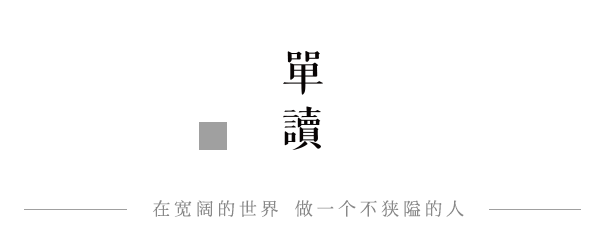
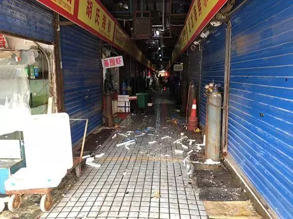
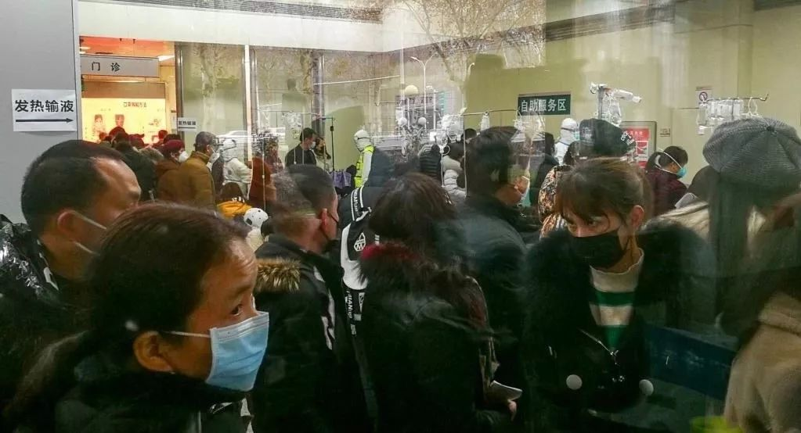

50位武汉人，亲笔写下他们“封城”第一天的生活 | 三明治持续更新中
原文链接 备份链接 昨天是武汉封城第一天，三明治紧急发起了每日书特别版《武汉日常》，邀请人在武汉和家乡在武汉的朋友，一起来用文字忠实记录他们在这个特殊时期的生活日常。 招募一经发出，就有近百位朋友迅速响应，其中有一路哭着坚持回家过年的北 …

新型肺炎疫情持续发酵，已致武汉封城。网络上的信息铺天盖地，仍无法解开我们的疑问。疫情真相为何？疫区实际情况是怎样？目前身在武汉的单读作者晓宇，讲述了他的所见所感。

瘟疫进行时
撰文：晓宇
一月十七日，我去车站接朋友。她是车站里唯一戴口罩的人。当时的通告仍是可防可控。我同她说，华南海鲜市场可就隔着一两条街。夜宵店，玻璃箱的海鲜生龙活虎。人比平日要少，老板仍在门口喊，几位。吃过蟹脚面，转去花园道。热闹不减，结束年会的人喝得醉醺醺，抢着打车。一姑娘，指着蹲着在吐的男子说，叫你给老子喝。这和我记忆里的武汉很像。
彼时的恐慌，限于养生的中老年人，他们警惕每一场冬春时节的疾病。但是，未戴口罩或定期消毒，只是增添管束晚辈的理由：少出门，多喝水。还有常年的阴谋论，习惯地质疑官方，也没有可靠的信息。很多人觉得不戴口罩才是理性客观的，谁愿意和中老年的猜疑或是阴谋论的凡事必反扯到一起。戴口罩成了非常外地的事情。
说起武汉人为什么不怕。我想不起来武汉恐惧的时候。九八年洪水，决堤危险，小区淹到了齐身，公交停了，麻木替代成为公共交通。一楼淹了，孩子们聚在二楼，用 BB 弹打水中浮游的动物。我记得，那时候大人还在上班，我们度过了水中的暑假。恐惧都是我长大后，看资料补齐的。些许有革命的缘故，革命都不怕，天灾地难也淡然。总之喜欢斗狠，越是碰到烈的东西，越要去硬碰。这和北京不一样，北京认为经的事多了，还能怎么样，但是不会缠斗，武汉是要斗下去，直到一方服软。

▲武汉华南海鲜市场
送她走的时候，气氛紧张了些。我说开车好了，避开地铁，从汉口站的广场绕过，海鲜市场目光可及。形势随后急转直下。先是各省的通报，确认这不是针对武汉和国外的病毒，又说可能人传人。超市内买年货的人，仍然络绎不绝。全国开始对武汉及卫生系统的声讨，我开始给学校写延长假期的邮件。
一月二十日，我有感冒的症状，即刻去了诊所，陆陆续续有人进出。大夫一人戴了口罩，给所有人开的药不过是抗生素、退烧药和金银花。等候中，读墙上的传染病报告准则：医护人员是法定责任人，甲类 2 小时报告，乙类丙类 24 小时，非典型肺炎又按甲类病流程。我如此看了两遍，药单递出来了。我把水银温度计递回去。医生说，没发烧啊。记下名字，年龄，然后对我和后面的人说，口罩都没有了，去旁边的药店看看。有人伸出头问，怎么预防。医生摘下口罩说，心理预防。大家也都笑了。
我开了医用酒精，去药店，都是买口罩的队伍。货架上摆出来各类，七嘴八舌的议论，哪一种管用。老板说，医生说哪一种，你们就买哪一种。犹豫时候，口罩眼看快被抢空了。便有人进来说，哪里哪里还有。又有人进来，托着蛇皮袋收口罩。不止一个人安慰地说，别人都戴了，我不戴也安全了。上海北京的口罩已脱销，武汉一直还能买到。从这一天起，街上出现口罩，变白，好像冬日初至。
二十一日，朋友中饭约在了市中心。我说，有些感冒。得回复，正好过来酒精消毒。身边都有感冒的人，或真，或精神过敏。没人说要取消中饭，反倒因为企业年会的取消，餐厅里腾出了位置。大家都吃得快，待喝尽酒，只剩我们一桌。临近的解放公园，我们掏出口罩，穿园而过，渺无人烟。我没有见过安静的解放公园。是因为今天下雨了，朋友拉拉衣领，说道。出租车司机戴了口罩，说你还不走吗，今天我送的全是去车站的，汉口，武昌，武汉。能去哪里呢，我说。不说实话，病人要跑，司机说。
他的话让我想起阿马蒂亚·森，专权导致饥荒。言论自由是肉麻的话题，太正确，太义正言辞，只有在危机中，才变得有意义。能不能发声是一回事，真话能不能胜出又是一回事。我盲目地寻找大小不一的信息，又对信息的无法验证烦躁不已。不敢大意往好处想，也不愿往坏处。一会儿很好，一会儿很糟。回到家，电视滚动钟南山的采访。集体决定明日采购后，再不出门。亲人取消了来汉的计划。

▲武汉同济医院，大批市民排队求诊
公共争论把戴口罩变成了素质问题，继而又是体制优劣。社交圈分裂，既有的立场没有变化，只是武汉成了新的案例，新的论证，用来歌颂，或者批评。在此之前，可以是澳洲，香港，汶川，卡特里娜。当切身之境成了案例，我完全失去了介入的欲望。一个字也不想写。武汉不是一个论据，生命也不是。疫区的人，也不关心此刻得出了孰优孰劣的结论。
空气里，整日都是冷冰冰的雨。
父母在讨论集中病患的金银潭医院究竟有多远，是否步行距离。小区里变得荒芜，尤其在晚上，连狗也变得安静。我睡得异常好，把旧书搬出来，做长期的打算。邻居提醒我们要囤积食物，又说其它小区有发现高烧即被送医的人，害怕自己哪一天突然的消失。新闻让人生气，不是喜庆的过节问候，便是壮士断腕的烈士医护。为什么要迷恋“悲壮”，灾难要成为颂歌。他们并不需要以悲壮来证明自己。人见到牺牲，热泪盈眶，对防范于未然，心存侥幸。偏偏要在一场天灾中，寻找人的神性。
二十三日，武汉封城。我们取消了扫墓。姥姥说，活人见不到死人了。父母冒险去做一场购物，传说的物价上涨没有碰到，因为货品一出便被抢空。超市经不住，上午关了门，择期再开。门口出现持温度计的保卫，赐福般的点向每人额头。蜂拥而至的问候信息。我想起数天前，有人对我说，恐怕要封城。我说，这是多么久远的想象。扔下泡腾片，在一阵气泡中，启动一日。街上再也见不到人脸，口罩的颜色通通变成白色，像是梨花挨到了季节的变化。
他们说，要在六日里建一所医院。比七日还少一天。

点击小程序下单，购买最新上市的《单读 23 · 破碎之家：法国文学特辑》
原文链接 备份链接 昨天是武汉封城第一天，三明治紧急发起了每日书特别版《武汉日常》，邀请人在武汉和家乡在武汉的朋友，一起来用文字忠实记录他们在这个特殊时期的生活日常。 招募一经发出，就有近百位朋友迅速响应，其中有一路哭着坚持回家过年的北 …
原文链接 备份链接 20200124 于天门 2020年1月24日。 农历腊月三十，除夕。 武汉封城第二天。 **天门封城第一天。 ** 下午在去给爹爹扫墓回来路上，在群里收到天门封城通知。至此，武汉8+1城市圈全部沦陷。 我们戴上口罩， …
原文链接 备份链接 本文由娱志The Review原创出品 华东师范大学传播学院学生娱评号 转载需申请授权 作者 | Moe，苏博 编辑 | 华实 导语 “自2020年1月23日10时起，全市城市公交、地铁、轮渡、长途客运暂停运营；无特殊 …
原文链接 备份链接 2020年1月23日凌晨2点，武汉市宣布自10时起交通封城，尽管很多人还在睡梦之中，在8个小时的窗口时间内，仍有很多人选择连夜出城。更多的人，则留了下来，有的人别无选择，有的人则担心自己无论去哪里都是潜在的传播者。一位 …
原文链接 备份链接 1月23日清早起来时，看到武汉封城的消息。起床后跟正在做饭的母亲说了一声，母亲不是很能理解，也不大关注。这几天一直在她耳边念叨太多疫情的事情，我感觉她都有些消化不过来了。很快黄冈市区也封城了，到了下午我老家武穴也传出了 …